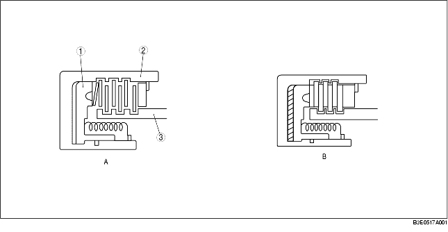
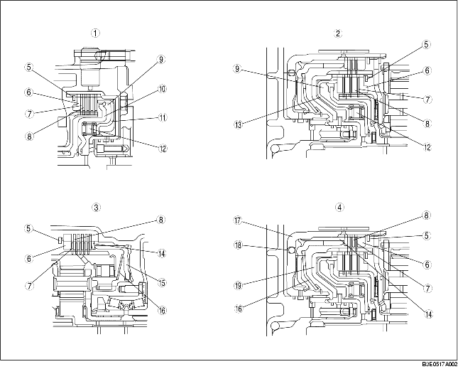

• De basisconstructie is in onderstaande afbeeldingen weergegeven. In afbeelding A is er ruimte tussen de koppelingsschijven en -platen, waardoor er geen kracht kan worden overgebracht. In afbeelding B werkt er een hydraulische druk op de zuiger. Hierdoor worden de schijven en platen tegen elkaar gedrukt waardoor de naaf mee gaat draaien met de trommel. Zodra de druk wordt afgevoerd worden de platen door een veer teruggedrukt in stand A.

.
• De schotelveren in de achteruitkoppeling en de L/R-rem dienen om schakelschokken te verminderen. De terugslagklep in de zuiger van de trommel van koppeling 2-4 (achteruitkoppeling) zorgt ervoor dat er geen druk op kan worden gebouwd als deze vrij draait. Hierdoor wordt voorkomen dat de koppeling gaat slippen. De vooruitkoppeling en de koppeling 3-4 zijn voorzien van een centrifugaaldruk-reductiekamer. Deze bevindt zich tegenover de hoofdkamer van de koppeling. De centrifugaaldruk-reductiekamer is altijd gevuld met ATF vanwege een speciale opening in de turbinewielas.

.